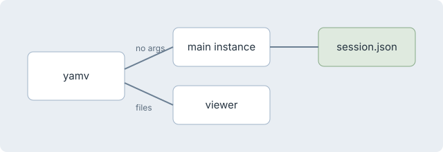

Each lane shows the same document and tree in light and dark. The tree on the right is the only list of open documents. The fonts are bundled with the app (Inter, Source Serif 4, JetBrains Mono), so Windows and macOS render alike.
A warm off-white page with serif body text set for long reading at a narrower measure. The sidebar is quiet and the accent is rust.
A neutral, GitHub-like page: Inter sans, crisp hairlines and ruled H2s. The blue accent and a wider measure suit technical docs.
Dark-first and high-contrast. Headings are set in mono with their markdown markers kept, accents are teal and magenta, and table headers are upper-case.
YAMV ships as a single executable on Windows and an app bundle on macOS. Before tagging a release, walk through the list below, and read the architecture notes if anything in the build changed.
Only one main instance runs at a time; any launch with files opens its own viewer window.
| Platform | Runtime | Artifact |
|---|---|---|
| Windows 11 | win-x64 | yamv.exe |
| macOS 14+ | osx-arm64 | YAMV.app |
var doc = renderer.Render("# Hello"); // title: Hello